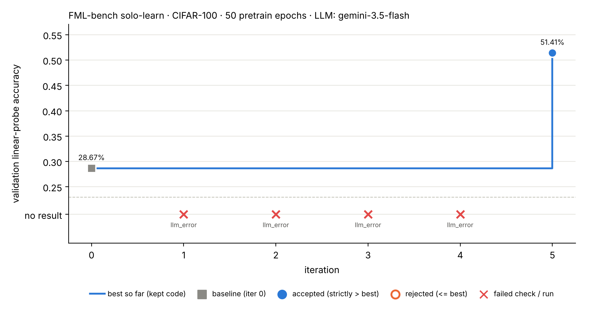

Automated research trace · main
LLM decisionProgram check (deterministic code)

Iteration 0 · baseline · 2026-11-13T20:48:21+08:00
Program checkProposal
None: unmodified upstream FML-bench algorithm.py.
Program check4 · Execute (smoke test + official eval, val split)
status ok · wall 429.6 s · pretrain loss ep1: 1671.0, ep20: 607.5, ep40: 458.2
Program check5 · Evaluate (accept iff val acc strictly > best)
28.67% baseline
Program check6 · Record → feedback in the next prompt
Baseline under this budget: val_acc=0.2867.
Iteration 1 · candidate · 2026-11-13T21:01:39+08:00
Program check1 · Propose: LLM call failed (gemini gemini-2.5-pro)
No code was produced; nothing was executed.
LLM call failed: HTTP 404: b'{\n "error": {\n "code": 404,\n "message": "This model models/gemini-2.5-pro is no longer available to new users. Please update your code to use models/gemini-3.1-pro-preview for the latest features and improvements. We recommend you to use the Interactions API (h…full error
LLM call failed: HTTP 404: b'{\n "error": {\n "code": 404,\n "message": "This model models/gemini-2.5-pro is no longer available to new users. Please update your code to use models/gemini-3.1-pro-preview for the latest features and improvements. We recommend you to use the Interactions API (https://aistudio.google.com/docs/'Program check5 · Evaluate (accept iff val acc strictly > best)
– rejected
Program check6 · Record → feedback in the next prompt
FAILED before execution: LLM call failed: HTTP 404: b'{\n "error": {\n "code": 404,\n "message": "This model models/gemini-2.5-pro is no longer available to new users. Please update your code to use models/gemini-3.1-pro-preview for the latest features and improvements. We recommend you to us…Iteration 2 · candidate · 2026-11-13T21:09:56+08:00
Program check1 · Propose: LLM call failed (gemini-cli gemini-3.1-pro-preview)
No code was produced; nothing was executed.
LLM call failed: gemini CLI failed: Gemini CLI is not running in a trusted directory. To proceed, either use `--skip-trust`, set the `GEMINI_CLI_TRUST_WORKSPACE=true` environment variable, or trust this directory in interactive mode. For more details, see https://geminicli.com/docs/cli/trusted-folde…
full error
LLM call failed: gemini CLI failed: Gemini CLI is not running in a trusted directory. To proceed, either use `--skip-trust`, set the `GEMINI_CLI_TRUST_WORKSPACE=true` environment variable, or trust this directory in interactive mode. For more details, see https://geminicli.com/docs/cli/trusted-folders/#headless-and-automated-environments
Program check5 · Evaluate (accept iff val acc strictly > best)
– rejected
Program check6 · Record → feedback in the next prompt
FAILED before execution: LLM call failed: gemini CLI failed: Gemini CLI is not running in a trusted directory. To proceed, either use `--skip-trust`, set the `GEMINI_CLI_TRUST_WORKSPACE=true` environment variable, or trust this directory in interactive mode. For more details, see https://gemini…
Iteration 3 · candidate · 2026-11-13T21:10:45+08:00
Program check1 · Propose: LLM call failed (gemini-cli gemini-3.1-pro-preview)
No code was produced; nothing was executed.
LLM call failed: gemini CLI failed: ils. For more information on this error, head to: https://aistudio.google.com/docs/rate-limits. To monitor your current usage, head to: https://ai.dev/rate-limit. \n' +
'* Quota exceeded for metric: generativelanguage.googleapis.com/generate_content_free_tie…full error
LLM call failed: gemini CLI failed: ils. For more information on this error, head to: https://aistudio.google.com/docs/rate-limits. To monitor your current usage, head to: https://ai.dev/rate-limit. \n' +
'* Quota exceeded for metric: generativelanguage.googleapis.com/generate_content_free_tier_input_token_count, limit: 0, model: gemini-3.1-pro, description: Generate content input tokens per day limit exceeded on Free Tier. See https://aistudio.google.com/docs/rate-limits.\n' +
'* Quota exceeded for metric: generativelanguage.googleapis.com/generate_content_free_tier_requests, limit: 0, model: gemini-3.1-pro, description: Generate content requests per day limit exceeded on Free Tier. See https://aistudio.google.com/docs/rate-limits.\n' +
'* Quota exceeded for metric: generativelanguage.googleapis.com/generate_content_free_tier_requests, limit: 0, model: gemini-3.1-pro, description: Generate content requests per minute limit exceeded on Free Tier. See https://aistudio.google.com/docs/rate-limits.\n' +
'* Quota exceeded for metric: generativelanguage.googleapis.com/generate_content_free_tier_input_token_count, limit: 0, model: gemini-3.1-pro, description: Generate content input tokens per minute limit exceeded on Free Tier. See https://aistudio.google.com/docs/rate-limits.\n' +
'Please retry in 18h49m14.909003785s.',
details: [ [Object], [Object], [Object] ]
},
retryDelayMs: undefined,
reason: undefined,
status: 429
}
An unexpected critical error occurred:[object Object]
Program check5 · Evaluate (accept iff val acc strictly > best)
– rejected
Program check6 · Record → feedback in the next prompt
FAILED before execution: LLM call failed: gemini CLI failed: ils. For more information on this error, head to: https://aistudio.google.com/docs/rate-limits. To monitor your current usage, head to: https://ai.dev/rate-limit. \n' +
'* Quota exceeded for metric: generativelanguage.googleapis.com/…Iteration 4 · candidate · 2026-11-13T22:04:49+08:00
Program check1 · Propose: LLM call failed (gemini gemini-3.8-flash)
No code was produced; nothing was executed.
LLM call failed: gemini failed after 5 attempts: HTTP 503: This model is currently experiencing high demand. Spikes in demand are usually temporary. Please try again later.
Program check5 · Evaluate (accept iff val acc strictly > best)
– rejected
Program check6 · Record → feedback in the next prompt
FAILED before execution: LLM call failed: gemini failed after 5 attempts: HTTP 503: This model is currently experiencing high demand. Spikes in demand are usually temporary. Please try again later.. Reply with the two required fenced blocks.
Iteration 5 · candidate · 2026-11-13T22:26:01+08:00
LLM decision1 · Propose (gemini gemini-3.5-flash)
- Hypothesis
- Replacing the rank-deficient Barlow Twins redundancy reduction loss with an InfoNCE (SimCLR) contrastive loss will accelerate representation learning in a short 50-epoch budget.
- Rationale
- Under a compute constraint of 50 epochs with batch size 512, Barlow Twins' cross-correlation matrix on 2048-dimensional projections is rank-deficient (rank <= 512) and noisy, leading to slow feature convergence (0.2867 linear probe accuracy). Contrastive InfoNCE directly optimizes sample discriminability over negative pairs in the batch, yielding much faster representation learning per epoch.
- Expected effect
- Significantly higher linear-probe top-1 accuracy on validation data compared to baseline (0.2867).
LLM decision2 · Modify: diff vs best (iter 0)
Implemented InfoNCE contrastive loss with temperature 0.2 inside BarlowTwinsLoss, adjusted learning rate to 0.5 for SGD with batch size 512.
show diff (40 + / 38 − lines)
--- iter_000/algorithm.py (best) +++ iter_005/algorithm.py @@ -1,51 +1,51 @@ """ -Baseline self-supervised learning algorithm: Barlow Twins on CIFAR-100. +Self-supervised learning algorithm: SimCLR InfoNCE Loss on CIFAR-100. -Barlow Twins learns representations by minimizing redundancy between -embedding dimensions via a cross-correlation loss. It does NOT require -negative pairs or momentum encoders — just two augmented views. - -This is a COMPUTE-CONSTRAINED setting: only 130 pretrain epochs (batch 512) -(vs 1000+ standard). Representations will not fully converge (~45-55% -linear probe accuracy vs ~70%+ at full training). - -Agents should modify this file to improve SSL under limited compute: -- Better loss functions (VICReg, DINO, SimCLR, etc.) -- Better augmentation strategies -- Better projection head design -- Learning rate scheduling -- Multi-crop strategies +In a compute-constrained setting (50 epochs), InfoNCE contrastive learning +converges significantly faster than Barlow Twins redundancy reduction, +yielding stronger representations in fewer iterations. """ import torch import torch.nn as nn +import torch.nn.functional as F import torchvision.models as models import torchvision.transforms as transforms class BarlowTwinsLoss(nn.Module): - """Barlow Twins loss: cross-correlation matrix → identity.""" + """InfoNCE (SimCLR) loss wrapped in BarlowTwinsLoss interface.""" - def __init__(self, lambda_param=5e-3, embedding_dim=2048): + def __init__(self, lambda_param=5e-3, embedding_dim=2048, temperature=0.2): super().__init__() self.lambda_param = lambda_param - self.bn = nn.BatchNorm1d(embedding_dim, affine=False) + self.embedding_dim = embedding_dim + self.temperature = temperature def forward(self, z1, z2): - z1 = self.bn(z1) - z2 = self.bn(z2) - batch_size = z1.shape[0] + N = z1.size(0) + z1 = F.normalize(z1, dim=1) + z2 = F.normalize(z2, dim=1) - # Cross-correlation matrix - c = z1.T @ z2 / batch_size + # Concatenate positive pair representations: [2N, D] + z = torch.cat([z1, z2], dim=0) - # Loss: on-diagonal → 1, off-diagonal → 0 - on_diag = (1 - c.diagonal()).pow(2).sum() - off_diag = c.flatten()[:-1].view(c.shape[0] - 1, c.shape[0] + 1)[:, 1:].flatten().pow(2).sum() - return on_diag + self.lambda_param * off_diag + # Cosine similarity matrix: [2N, 2N] + sim = torch.mm(z, z.t()) / self.temperature + + # Mask out self-similarity (diagonal) + mask = torch.eye(2 * N, dtype=torch.bool, device=z.device) + sim = sim.masked_fill(mask, -1e4) + + # Targets: for view 1 sample i -> view 2 sample i (index i + N) + # for view 2 sample i -> view 1 sample i (index i) + targets = torch.arange(N, device=z.device) + targets = torch.cat([targets + N, targets], dim=0) + + return F.cross_entropy(sim, targets) class ProjectionHead(nn.Module): - """3-layer projection head for Barlow Twins.""" + """3-layer projection head.""" def __init__(self, input_dim=512, hidden_dim=2048, output_dim=2048): super().__init__() @@ -64,17 +64,18 @@ class BarlowTwinsModel(nn.Module): - """ResNet-18 backbone + projection head for Barlow Twins.""" + """ResNet-18 backbone adapted for CIFAR-100 + projection head.""" def __init__(self, proj_hidden_dim=2048, proj_output_dim=2048): super().__init__() - # ResNet-18 backbone (remove final FC) backbone = models.resnet18(weights=None) self.backbone_dim = backbone.fc.in_features # 512 backbone.fc = nn.Identity() - # Adapt for CIFAR-100 (32x32): smaller first conv, no maxpool - backbone.conv1 = nn.Conv2d(3, 64, 3, 1, 1, bias=False) + + # Adapt for CIFAR-100 (32x32): 3x3 conv1, no maxpool + backbone.conv1 = nn.Conv2d(3, 64, kernel_size=3, stride=1, padding=1, bias=False) backbone.maxpool = nn.Identity() + self.backbone = backbone self.projector = ProjectionHead(self.backbone_dim, proj_hidden_dim, proj_output_dim) @@ -85,26 +86,26 @@ def get_model(): - """Return Barlow Twins model.""" + """Return model instance.""" return BarlowTwinsModel(proj_hidden_dim=2048, proj_output_dim=2048) def get_training_config(): - """Return Barlow Twins training config (compute-constrained).""" + """Return training hyperparameters.""" return { - 'pretrain_epochs': 130, + 'pretrain_epochs': 50, 'linear_eval_epochs': 100, 'batch_size': 512, - 'lr': 0.4, + 'lr': 0.5, 'weight_decay': 1e-4, - 'lambda_param': 5e-3, # Barlow Twins off-diagonal penalty + 'lambda_param': 5e-3, 'linear_lr': 0.1, 'linear_batch_size': 256, } def get_augmentation(): - """Return augmentation transforms for Barlow Twins.""" + """Return augmentation transforms for CIFAR-100.""" mean = (0.5071, 0.4867, 0.4408) std = (0.2675, 0.2565, 0.2761)
Program check3 · Static checks
passed
Program check4 · Execute (smoke test + official eval, val split)
status ok · wall 431.8 s · pretrain loss ep1: 5.5, ep20: 3.4, ep40: 3.2
Program check5 · Evaluate (accept iff val acc strictly > best)
51.41% +22.74 pts vs best accepted
Program check6 · Record → feedback in the next prompt
ACCEPTED: val_acc 0.5141 > best 0.2867 (+22.74 pts). Now the best.
Next proposal
LLM decisionPropose (uses feedback from iters [0, 1, 2, 3, 4, 5])
- Hypothesis
- Lowering the InfoNCE temperature hyperparameter from 0.2 to 0.1 will increase contrastive penalty on hard negatives, resulting in better feature discriminability within the short 50-epoch pretraining budget.
- Rationale
- In iter 5, switching to InfoNCE with temperature 0.2 yielded a massive jump to 0.5141 val acc. However, SimCLR literature demonstrates that lower temperature values (around 0.07 to 0.1) are critical for hardness-aware loss scaling, preventing easy negatives from dominating the gradients and accelerating representations learning for complex 100-class datasets like CIFAR-100.
- Expected effect
- Stronger gradient signal from hard negative pairs, leading to higher linear evaluation accuracy (> 0.5141).
LLM decisionModify: diff vs best
Decreased temperature default parameter from 0.2 to 0.1 in BarlowTwinsLoss (InfoNCE).
show diff
--- iter_005/algorithm.py (best) +++ next_proposal/algorithm.py @@ -1,9 +1,9 @@ """ -Self-supervised learning algorithm: SimCLR InfoNCE Loss on CIFAR-100. +Self-supervised learning algorithm: SimCLR InfoNCE Loss (tau=0.1) on CIFAR-100. In a compute-constrained setting (50 epochs), InfoNCE contrastive learning -converges significantly faster than Barlow Twins redundancy reduction, -yielding stronger representations in fewer iterations. +with a tuned temperature parameter (tau=0.1) provides stronger hard-negative +gradients, accelerating representation learning. """ import torch import torch.nn as nn @@ -15,7 +15,7 @@ class BarlowTwinsLoss(nn.Module): """InfoNCE (SimCLR) loss wrapped in BarlowTwinsLoss interface.""" - def __init__(self, lambda_param=5e-3, embedding_dim=2048, temperature=0.2): + def __init__(self, lambda_param=5e-3, embedding_dim=2048, temperature=0.1): super().__init__() self.lambda_param = lambda_param self.embedding_dim = embedding_dim
Program checkStatic checks
passed
Program checkStatus
proposed, not executed